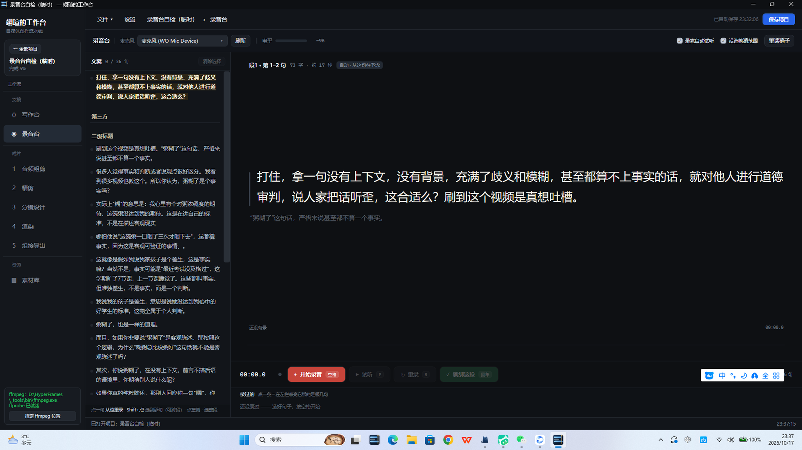
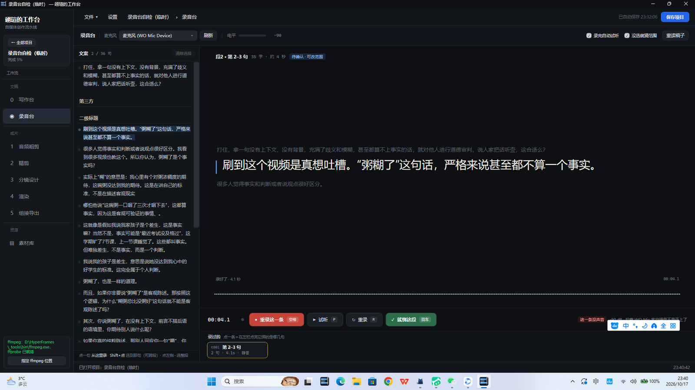
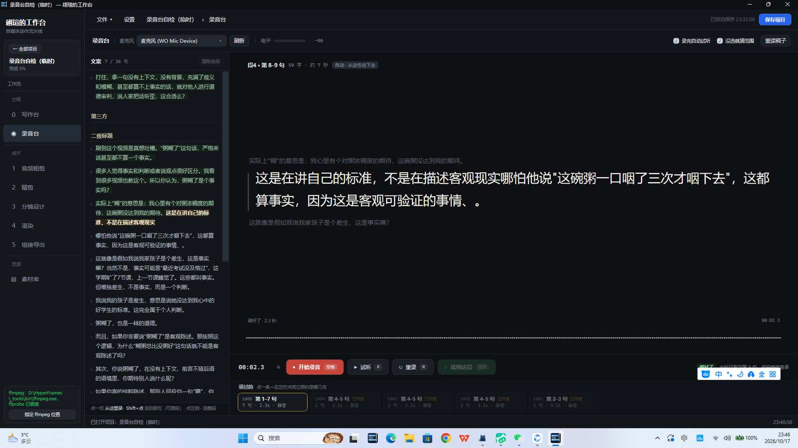

录音台 V1.16.0 · 自检与实测报告
2026-10-17 深夜 · 代码自检（编译 0 警告 0 错误）→ 调试模式实测（遥控口 + 真录真落盘）→ 修 bug → 复测 → 发布
一、结论
全链路通过 录音台已经能用了。
发布版在 D:\工作台\工作台.exe（版本戳 1.16.0），打开任意项目，左侧菜单「文稿」组里就能看到「◉ 录音台」。
唯一还没验证的是"真人声音好听不好听"——这必须你连上手机 WO Mic 真实录一段才算数（今晚的测试录音是静音的，因为手机没连）。
二、这版做了什么（大白话版）
一句话：左边是整篇稿子（能点），右边是录音机，两边当场配对。
- 点一句 = 从这句开始录；Shift+点另一句 = 中间全选（能跨自然段——你说"文案分两段、实际一口气"就是干这个的）；点段落左边的小圆点 = 选整段。
- 也可以什么都不选直接按空格：念到合适的地方再按空格停，程序按"录音多长 × 你的语速"猜出你刚才念的是哪几句（蓝框标出来），对就回车，不对点一下改。
- 重录 = 再录一条新的，旧的不删（灰着留底，点一下能恢复）。所以永远没有剪接、没有接缝。
- 录完程序先替你筛一遍：红灯=这条根本没声音（WO Mic 掉线就是这样），黄灯=语速不对劲（多半是口胡/念漏）。灯只是提醒，你回车照样过。
- 全程手不离键盘：空格 录/停 · 回车 确认 · R 重录 · P 试听 · Esc 作废这条 · ↑↓ 挪光标。
三、代码自检
| 检查项 | 结果 |
|---|
| 编译 | 0 警告 0 错误（Debug 与 Release 各一遍） |
| 老功能回归 | 本版没改任何现有页面的代码：写作台 / 粗剪 / 精剪 / 分镜 / 渲染 / 导出 / 复盘一行没动，script.md 只被读不被写 |
| 写盘安全 | record.json 无 BOM（外部工具能读）+ 先写临时文件再替换（断电不坏账） |
| 打开页面零副作用 | 装载期程序触发的"假事件"不落盘——光是打开录音台不会凭空建出文件夹 |
| 切页安全 | 录到一半切走，这条音自动安全停录并保留，不会丢 |
四、实机实测（调试模式 + 遥控口，12 项全过）
| # | 测什么 | 结果 |
|---|
| 1 | 点一句选中（"段1 · 第 1 句"） | 过 |
| 2 | Shift+点 跨段选区（第 1–7 句 · 179 字） | 过 |
| 3 | 点段落圆点选整段（段2 · 第 2–3 句） | 过 |
| 4 | 录 4 秒 → wav 落盘（时长/字节数/峰值全部对得上） | 过 |
| 5 | 静音体检：这条录音没声音 → 红灯"这一条没声音" | 过（正是 WO Mic 掉线的探测器） |
| 6 | 回车确认绑定 → 光标自动跳到下一句 | 过 |
| 7 | 清除选择后自由录 → 按语速猜范围生效 | 过 |
| 8 | 重录同一段 → 旧录音自动变"已作废"、新录音生效 | 过 |
| 9 | 点作废的卡片 → 恢复它、盖掉新的（可反悔） | 过 |
| 10 | 候选态点句子改绑定终点（第 4 句 → 扩到第 7 句） | 过 |
| 11 | 试听 P：回放中状态 → 播完回到原状态 | 过 |
| 12 | Esc 作废当前录音（不留垃圾文件）；切页往返状态保持 | 过 |
五、实测揪出并修掉的 bug
真 bug 自动试听还在播的时候，点左栏句子会"偷改"绑定范围——
你只是想先点着看看，结果回放一结束选区已经被改了。
修法 回放中 / 录音中，点句子和方向键一律不理会（等半秒再点，不抢戏）。修完复测第 10 项通过。
六、实测截图

① 主界面：左边稿子（金色=当前句），右边提词区大字，底部控制条 + 录音台账

② 录完：蓝框=待确认范围，底部出现 t001 卡片，右下红灯"这一条没声音"（测试环境手机没连，静音——这正是它该干的活）

③ 绑定后：左栏 7 句变绿（已录），台账里金框=t005 生效、灰的=被盖掉留底可恢复，光标自动跳到第 8 句
七、给你的三句话
1. 直接用：打开工作台 → 进行中 → 随便开个有稿子的项目 → 左侧「录音台」。
首次录音前：手机连上 WO Mic 客户端，右上角点一下「刷新」。
2. 有个练习场：测试项目 录音台自检（临时） 我特意留着（里面是《粥糊了》的稿子 + 几条静音测试录音），
你可以先在那里把按键玩熟。想删跟我说一声，我不动它。
3. 下一步：你真实录一段满意的，我就开工 V1.17.0——把绑好的录音直接拼出 transcript.json，
粗剪往下的所有流程一行不用改。